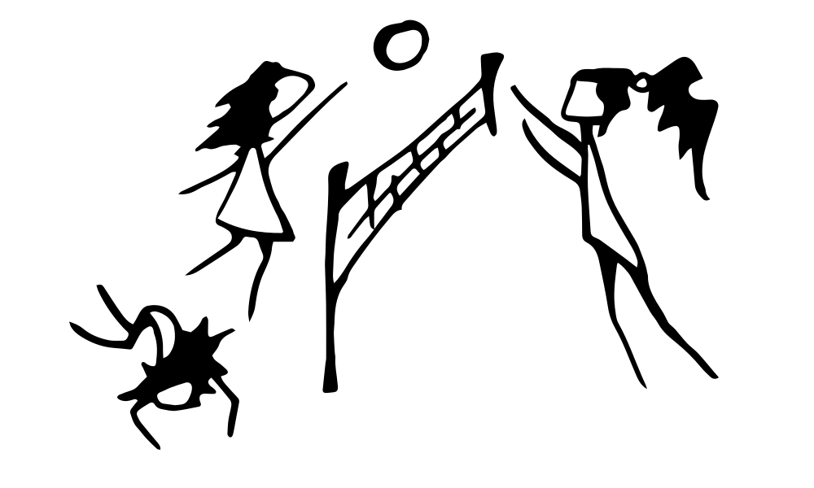
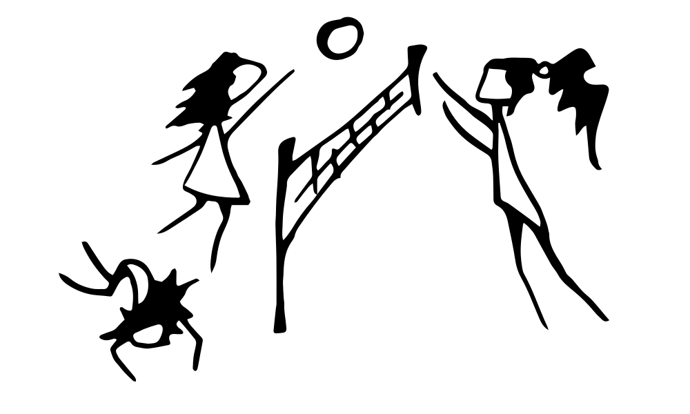

— Привет, наша Таня громко плачет
— Уронила в речку мячик?
— Да, и мячик тоже. Но там больше о том, что вместе с мячиком оторвало руку.
— Уверена, Таня стала самой очаровательной среди одноруких. Почему она плачет?
— Произошло насилие против её воли.
— Насилие, отвратительно. Что мы можем сделать?
— Солдаты в форме, — то есть, действующие не самостоятельно, а по указу империи — пришли в лес и закрыли его для посещения. Тане запреты не помеха, а лес считает своим домом. Она открыто шла конфликт, пока сержант не сообразил в нужном месте указаний округлять до нуля. Тане оторвали руку, и под предлогом, — что нет целого нарушения запрета, — перестали обращать внимание на её появления в закрытой зоне.
— А мяч?
— Один из солдат проявил сочуствие. Увидел летящий мяч и посчитал, что однорукой будет сложно его принять. Выскочил перед ней и ожидаемо отбил мяч в реку. Ты спрашивала, что мы можем сделать для Тани?
— Мы оторвём руки солдатам, сержанту, офицерам и дальше по цепочке ответственных лиц в имперской системе. Ситуацию с Таней это не исправит, но ослабим цепочку, чтобы уменьшить шансы на повторение похожих событий. Прямой конфликт с императором нас погубит, что позволяет не тратить ресурсы на планирование следующих шагов.
— Конфликты это хорошо, мне нравятся
— Почему?
— Во время конфликта всё трусливое прячется подальше. Всё смелое, что я люблю, остаётся в эпицентре событий.


 
